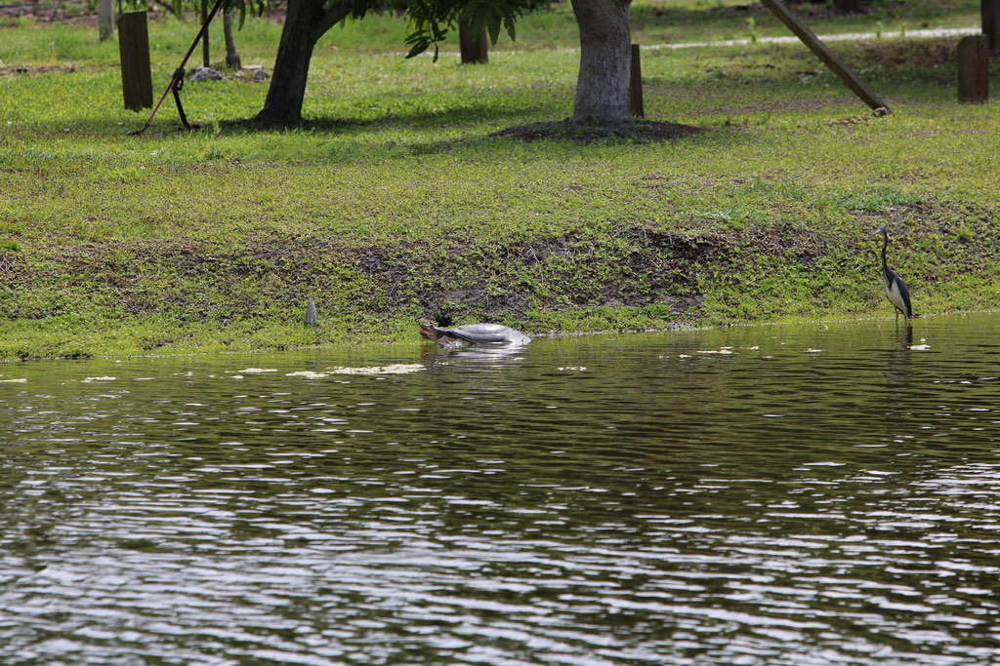

- The Florida softshell turtle looks like no other turtle in the state — a flat, leathery, pancake-shaped reptile with a long, snorkel-like snout.
- Its shell is not the hard dome you expect; it is soft and rubbery, covered in skin rather than hard plates.
- The long snorkel nose lets it breathe at the surface while staying almost completely hidden underwater, just the nostrils poking up.
- It is the largest softshell turtle in North America, and a powerful one: handled or cornered, it can deliver a serious bite, so it is strictly a look-but-don't-touch animal.
Flat, round, and leathery rather than hard; olive to dark brown, often with darker blotches in young turtles.
Long and tube-like, with the nostrils at the tip.
Broadly webbed for swimming.
Females grow much larger than males.
Essentially silent.
A flat, pancake-shaped turtle with a pointed, snorkel-like nose, either basking on a bank or showing just its nostrils at the water's surface. The soft, leathery shell tells it apart instantly from the park's hard-shelled cooters and sliders.
A carnivore — fish, snails, frogs, crayfish, insects, and other small aquatic animals, and occasionally even small waterbirds.
At the ponds — often only the pointed snout breaking the surface, or the whole turtle basking on a muddy bank. Give it room; it will slip away fast if disturbed.
Year-round resident. Most often seen surfacing to breathe or basking on warm days.
Look but do not touch. Do not handle, feed, or corner it. Observe from a comfortable distance and let it move freely.
- © Cole Guyton (CC-BY-NC), via iNaturalist